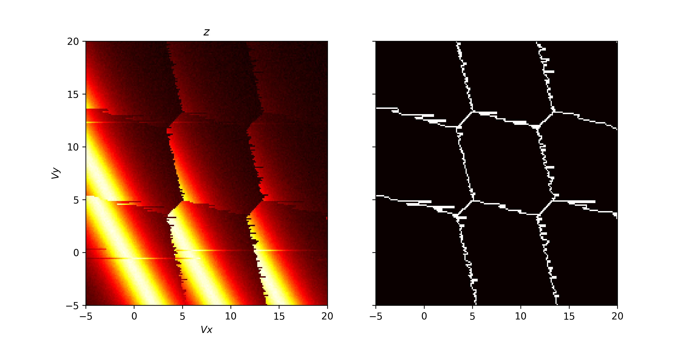

Advanced functionality
Here we will provide some examples which show off some of the more advanced functionally provided by QArray.
Including noise in the simulation
To add noise to the simulation, we can import some of noise classes provided by QArray. In the example below we demonstrate the use of the WhiteNoise and TelegraphNoise classes.
The WhiteNoise class adds white noise to the simulation, of a particular amplitude (std).
The TelegraphNoise simulates a charge trap randomly switching near the charge sensor. The probabilities
of the trap switching between the two states are given by p01 and p10.
The amplitude of the noise is given by amplitude.
In addition, all our noise models overload the + operator, so we can combine them to create more complex noise models.
import matplotlib.pyplot as plt
import numpy as np
from qarray import ChargeSensedDotArray
from qarray.noise_models import WhiteNoise, TelegraphNoise, NoNoise
# defining the capacitance matrices
Cdd = [[0., 0.1], [0.1, 0.]] # an (n_dot, n_dot) array of the capacitive coupling between dots
Cgd = [[1., 0.6, 0.05], [0.2, 1., 0.05], ] # an (n_dot, n_gate) array of the capacitive coupling between gates and dots
Cds = [[0.02, 0.01]] # an (n_sensor, n_dot) array of the capacitive coupling between dots and sensors
Cgs = [[0.06, 0.05, 1]] # an (n_sensor, n_gate) array of the capacitive coupling between gates and sensor dots
# creating the model
model = ChargeSensedDotArray(
Cdd=Cdd, Cgd=Cgd, Cds=Cds, Cgs=Cgs,
coulomb_peak_width=0.05, T=100
)
# defining the min and max values for the dot voltage sweep
vx_min, vx_max = -2, 2
vy_min, vy_max = -2, 2
# using the dot voltage composer to create the dot voltage array for the 2d sweep
vg = model.gate_voltage_composer.do2d('P1', vy_min, vx_max, 100, 'P2', vy_min, vy_max, 100)
# centering the voltage sweep on the [0, 1] - [1, 0] interdot charge transition on the side of a charge sensor coulomb peak
vg += model.optimal_Vg([0.5, 0.5, 0.6])
# defining a white noise model with an amplitude of 1e-2
white_noise = WhiteNoise(amplitude=1e-2)
# defining a telegraph noise model with p01 = 5e-4, p10 = 5e-3 and an amplitude of 1e-2
random_telegraph_noise = TelegraphNoise(p01=5e-4, p10=5e-3, amplitude=1e-2)
# combining the white and telegraph noise models
combined_noise = white_noise + random_telegraph_noise
# defining the noise models
noise_models = [
NoNoise(), # no noise
white_noise, # white noise
random_telegraph_noise, # telegraph noise
combined_noise, # white + telegraph noise
]
# plotting
fig, axes = plt.subplots(2, 2, sharex=True, sharey=True)
fig.set_size_inches(5, 5)
for ax, noise_model in zip(axes.flatten(), noise_models):
model.noise_model = noise_model
# fixing the seed so subsequent runs are yield identical noise
np.random.seed(0)
z, n = model.charge_sensor_open(vg)
ax.imshow(z, extent=[vx_min, vx_max, vy_min, vy_max], origin='lower', aspect='auto', cmap='hot')
ax.set_xlabel('$Vx$')
ax.set_ylabel('$Vy$')
axes[0, 0].set_title('No Noise')
axes[0, 1].set_title('White Noise')
axes[1, 0].set_title('Telegraph Noise')
axes[1, 1].set_title('White + Telegraph Noise')
plt.tight_layout()

Latching
Within QArray we provide two latching models: LatchingModel and PSBLatchingModel. The LatchingModel simulates latching on the transitions to the leads and inter-dot transitions, caused in reality by slow tunnel rates. The PSBLatchingModel simulates latching only when the moving from (1, 1) to (0, 2) as indicative of Pauli spin blockade.
As in the real world, there is a polarity to this latching, based on the direction in the transition is crossed.
In this section, we demonstrate the use of the LatchingModel with the ChargeSensedDotArray class.
To begin, we import the necessary elements and define the capacitance matrices. We then define the latching model and the charge sensed dot array model. The latching model class takes three arguments:
The number of dots in the device array.
A vector,
p_leads, encoding information about the tunnel rate to the leads. The elements are such that if the voltage configuration crosses the (N, M) -> (N + 1, M) charge transition,p_leads[0]is the probability that the dot’s charge configuration will change from (N, M) to (N + 1, M) in the next pixel of the charge stability diagram. In our case we set both probabilities to 0.25.A matrix,
p_inter, encoding information about the tunnel rates between dots. These elements are such that if the (N, M) -> (N - 1, M + 1) charge transition is crossed,p_inter[0][1]is the probability that the dot’s charge configuration will change from (N, M) to (N - 1, M + 1) in the next pixel of the charge stability diagram. Note that the unlatched case, the probability of this transition is 1. The diagonal elements of the matrix are not used. In the example below we set the off-diagonals to 1, meaning no latching will occur on the inter-dot transition.
Alternatively, we can use the Pauli spin blockade latching model via PSBLatchingModel. This model only has one parameter, which is the probability of latching when moving from the (1, 1) to (0, 2) charge states as indicative of PSB.
# a latching model which simulates latching only when the moving from (1, 1) to (0, 2) as indicative of PSB
latching_model = PSBLatchingModel(
n_dots=2,
p_psb=0.2
)
With our array and latching models defined, we use the GateVoltageComposer to create a gate voltage sweep and the optimal_Vg method to find the optimal gate voltages in the same way as before. We plot the output of the charge sensor, shown below.
# creating the voltage composer
voltage_composer = model.gate_voltage_composer
# defining the min and max values for the dot voltage sweep
vx_min, vx_max = -20, 5
vy_min, vy_max = -20, 5
# using the dot voltage composer to create the dot voltage array for the 2d sweep
vg = voltage_composer.do2d(1, vy_min, vx_max, 200, 2, vy_min, vy_max, 200)
vg += np.array([0, 0, -5.05])
t0 = perf_counter()
z, n = model.charge_sensor_open(vg)
print(f"Elapsed time: {perf_counter() - t0:.2f} s")
fig, axes = plt.subplots(1, 2, sharex=True, sharey=True)
fig.set_size_inches(10, 5)
# plotting the charge stability diagram
axes[0].imshow(z, extent=[vx_min, vx_max, vy_min, vy_max], origin='lower', aspect='auto', cmap='hot')
axes[0].set_xlabel('$Vx$')
axes[0].set_ylabel('$Vy$')
axes[0].set_title('$z$')
axes[1].imshow(charge_state_changes(np.round(n)), extent=[vx_min, vx_max, vy_min, vy_max], origin='lower',
aspect='auto', cmap='hot')
plt.show()
